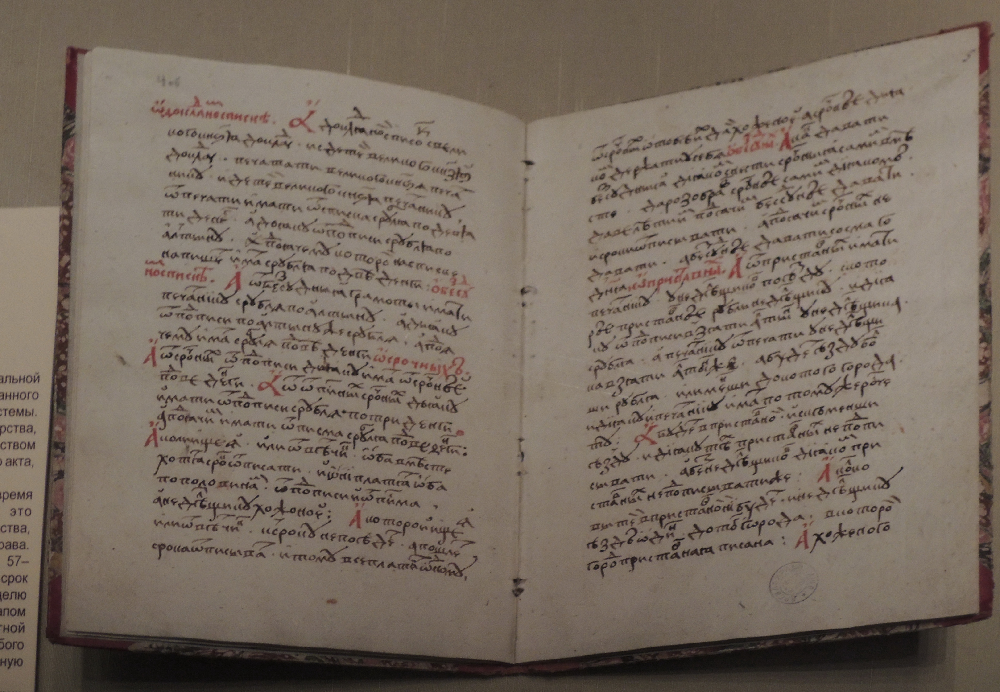
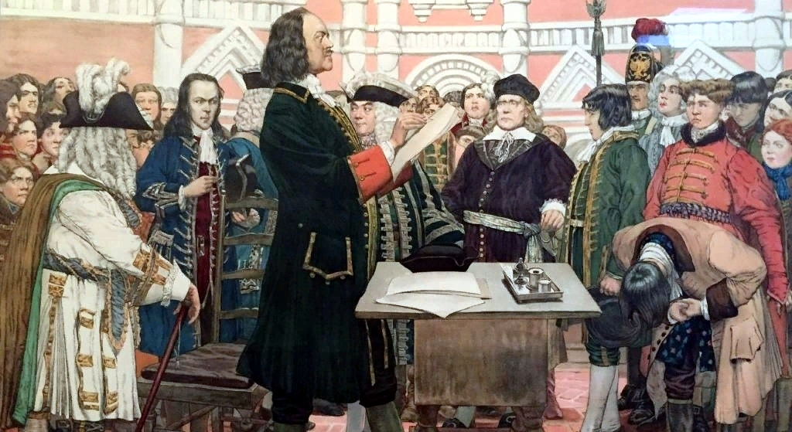
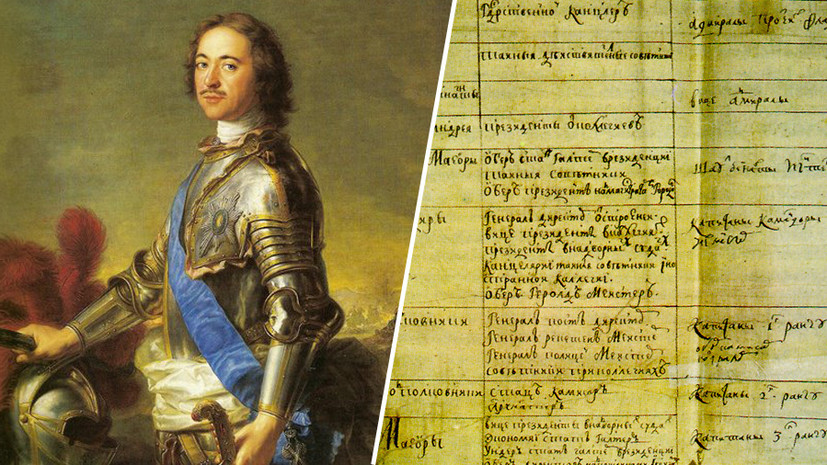
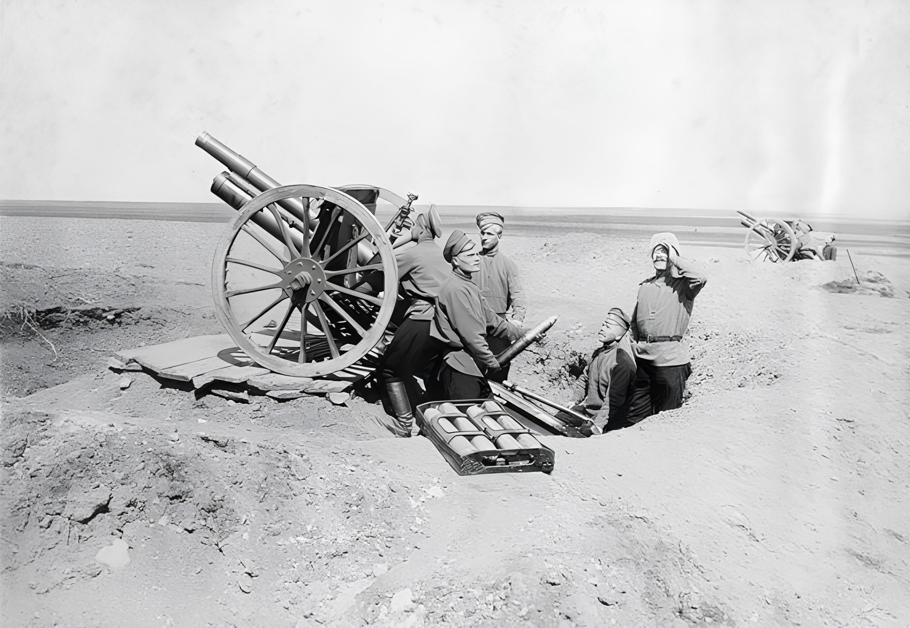
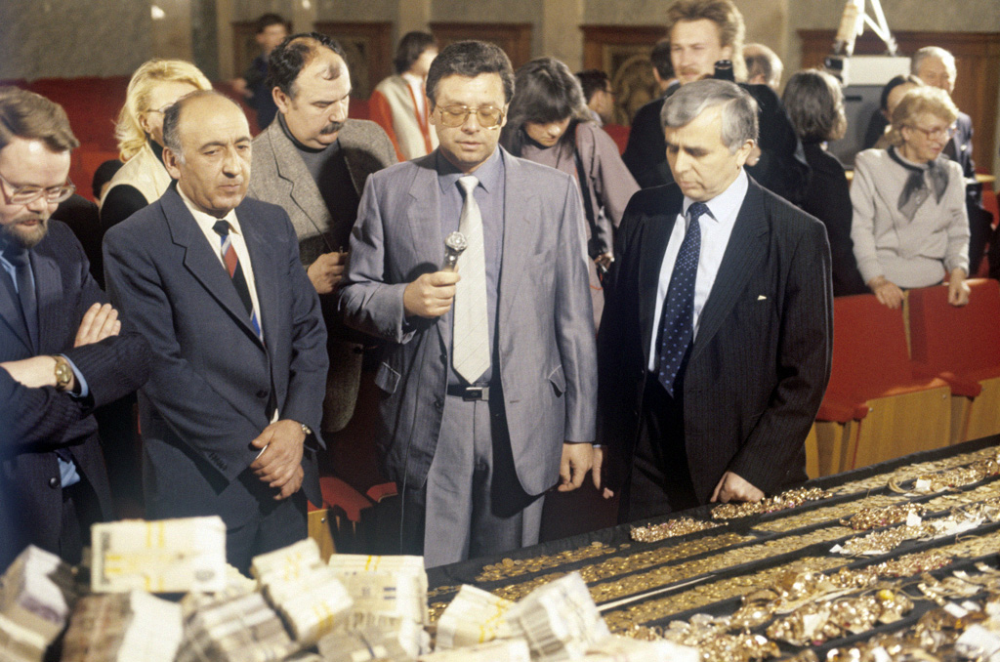
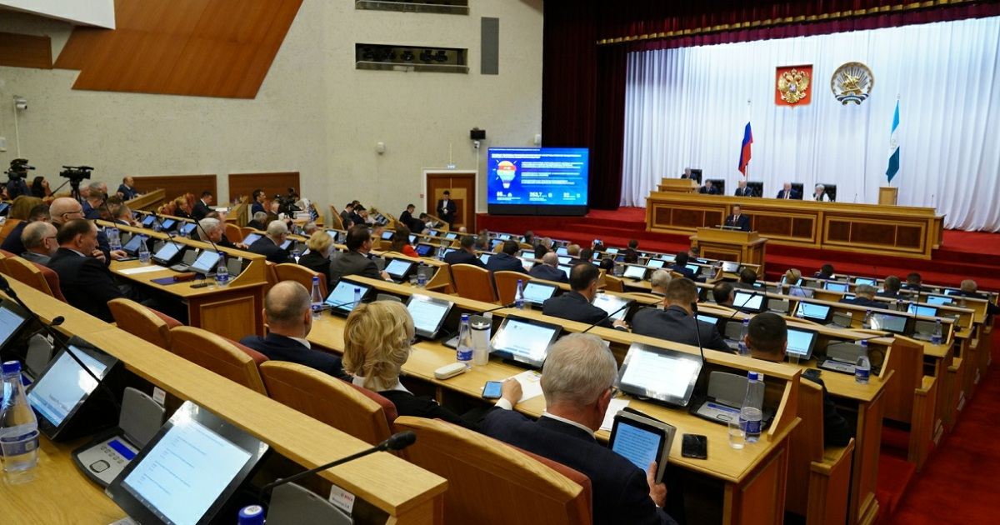

Содержание
Хронология развития антикоррупционной политики
Первые формы коррупции и зарождение законодательства
Коррупция на протяжении столетий остается одной из наиболее острых и трудноразрешимых проблем, препятствующих эффективному развитию российской государственности. Являясь системным вызовом, она пронизывает различные сферы общественной жизни: подрывает основы правопорядка, деформирует рыночную экономику, искажает механизмы распределения ресурсов и, что особенно важно, снижает уровень доверия граждан к институтам власти.
Проблема коррупции в Древней Руси носила глубоко специфический характер. В эпоху Киевской Руси четкого формально-правового определения взятки не существовало, однако в общественном сознании сформировалось разделение на «мздоимство» (получение вознаграждения за законные действия) и «лихоимство» (вымогательство за незаконные действия). Ключевым термином был «посул» — добровольное подношение, которое со временем превратилось в обязательное условие для отправления правосудия.
Первым фундаментальным шагом стал Судебник 1497 года Ивана III. Документ впервые на государственном уровне наложил прямой запрет на посулы для всех уровней судебной власти. Законодатель предпринял попытку исключить экономическую почву для взяточничества, введя систему строго фиксированных государственных пошлин вместо произвольных даров. Преступление перестало трактоваться как «обида» и стало осмысляться как деяние против публичного интереса — «лихое дело», каравшееся торговой казнью или смертью.
Система кормлений и реформы XVI века
Главным институциональным источником коррупции вплоть до середины XVI века оставалась архаичная система кормлений. Наместники и волостели присылались из центра не для государственной службы, а для получения собственного дохода («корма») за счет местного населения. Судебник 1497 года пытался ограничить аппетиты кормленщиков, но практика показала: наместники, зная о краткосрочности пребывания, стремились «накормиться» впрок, вымогая дополнительные подношения.
Решительный шаг был сделан Иваном IV (Грозным). Судебник 1550 года усилил меры ответственности судей за неправосудные решения, а Земская реформа 1555–1556 годов полностью ликвидировала систему кормлений в основных землях государства. На смену назначенным чиновникам пришли выборные губные и земские старосты из местных посадских людей и черносошных крестьян. Власть на местах перешла к представителям тех же сословий, которые были лично заинтересованы в пресечении произвола.

Антикоррупционные реформы Петра I
Эпоха Петра I стала переломным моментом. Петр первым осознал, что коррупция — это системная угроза, способная поглотить ресурсы, необходимые для ведения Северной войны и масштабных преобразований. Фундаментальной мерой стала попытка ликвидации повода для взяточничества: чиновники были переведены на твердое денежное жалованье. Однако из-за дефицита казны выплаты задерживались, что вынуждало служащих возвращаться к старым практикам.
В 1711 году был учрежден институт фискалов — разветвленная сеть тайных надзирателей, подчиненных Сенату. Фискал получал половину штрафа с виновного, что породило проблему массовых оговоров. Понимая неэффективность тайного надзора, в 1722 году Петр создал Прокуратуру. Генерал-прокурор стал «оком государева». Указ 1714 года «О воспрещении взяток и посулов» предписывал наказывать не только берущего, но и дающего. Самым громким делом стала казнь сибирского губернатора князя Матвея Гагарина в 1721 году, тело которого не снимали с виселицы несколько месяцев в назидание остальным.

Развитие законодательства в XIX веке
В XIX веке борьба с коррупцией приобрела более системный и юридически выверенный характер. Вершиной правовой мысли стало «Уложение о наказаниях уголовных и исправительных» 1845 года, где должностным преступлениям был посвящен масштабный раздел. Законодатель впервые провел четкую юридическую границу между мздоимством (вознаграждение за законные действия) и лихоимством (вымогательство за нарушение закона). Наказания за лихоимство были крайне суровыми: от лишения всех прав состояния до ссылки в Сибирь или каторжных работ.
Николай I понимал, что корень проблемы кроется в социальном положении чиновничества. Для профилактики коррупции были введены образовательный ценз, система пенсионного обеспечения за «беспорочную» службу и жесткая регламентация продвижения по «Табели о рангах». Тем не менее, уровень коррупции среди мелкого и среднего чиновничества оставался высоким, а подношения воспринимались обществом как неизбежная часть административного процесса.

Коррупция в начале XX века и кризис империи
На рубеже XIX–XX веков характер коррупции изменился: она стала теснее связана с крупным капиталом и промышленными заказами. Бурное развитие железных дорог и перевооружение армии открыли новые горизонты для злоупотреблений. Первая мировая война стала катализатором коррупционного взрыва. Огромные ассигнования распределялись в условиях непрозрачности через «земгоры» и военно-промышленные комитеты. Депутаты Государственной думы регулярно вскрывали факты чудовищных хищений и «снарядного голода» из-за коррупционных схем.
«Распутинщина» стала символом деградации системы назначений: государственные посты и контракты получали люди, имевшие доступ к «старцу». Неспособность монархии очистить аппарат привела к полной утрате доверия к власти. К 1917 году коррупция стала восприниматься как системная характеристика «старого режима» — одна из главных предпосылок революции.

Антикоррупционная политика в СССР
Ранний СССР и сталинский период
После Октябрьской революции 1917 года большевики считали коррупцию пороком капитализма. Декрет СНК от 8 мая 1918 года «О взяточничестве» приравнял взятку к контрреволюционной деятельности и предусматривал наказание до расстрела. Однако с переходом к НЭПу коррупция получила новую почву: возрождение частного предпринимательства при сохранении госконтроля создало среду для сращивания «нэпманов» и советских бюрократов.
Поздний СССР: эпоха «застоя» и «хлопковое дело»
В 1970–1980-е годы возник феномен «теневой экономики» и «блата». Уголовный кодекс РСФСР 1960 года закрепил жесткую иерархию статей за получение, дачу и посредничество во взятке. Коррупция достигла высших эшелонов власти. Самым ярким примером стало «Хлопковое дело»: в Узбекистане существовала система гигантских приписок, а миллиарды рублей распределялись в качестве взяток между партийными руководителями вплоть до Москвы.
Приход Ю. В. Андропова в 1982 году ознаменовался «большой чисткой»: громкие дела («Медуновское», «Елисеевское», «Океан») следовали одно за другим. В 1986 году было принято последнее советское постановление «О мерах по усилению борьбы с нетрудовыми доходами», которое, однако, не решило проблему взяточничества в аппарате.

Современная антикоррупционная политика РФ
Современная Россия начала выстраивать комплексную систему противодействия коррупции в начале 2000-х годов. Ключевым импульсом стала ратификация в 2006 году Конвенции ООН против коррупции. Центральным элементом стал Федеральный закон № 273-ФЗ от 25 декабря 2008 года «О противодействии коррупции», закрепивший определение коррупции как злоупотребления служебным положением.
Важнейшим новшеством стало внедрение превентивной модели. Закон ввел обязательное декларирование доходов и расходов для госслужащих и членов их семей, механизм урегулирования конфликта интересов, запрет на иностранные счета для отдельных категорий чиновников и увольнение в связи с утратой доверия.
Таким образом, пройдя путь от «посулов» Древней Руси до цифрового мониторинга, российская антикоррупционная политика эволюционировала от карательной к превентивной модели, хотя проблема сохраняет свою остроту и требует дальнейшего совершенствования правоприменительной практики.

Заключение
Проведённое исследование подтверждает, что коррупция сопровождала российское государство на всех этапах его существования, принимая различные формы: от «кормлений» и «посулов» до сложных бюрократических схем и «теневой экономики». Понимание эволюции этого явления позволяет не только выявить закономерности его развития, но и выработать более эффективные стратегии противодействия, учитывающие национальную специфику. Современное законодательство, опираясь на исторический опыт, делает ставку на прозрачность, цифровизацию и неотвратимость наказания, что является залогом дальнейшего укрепления российской государственности.